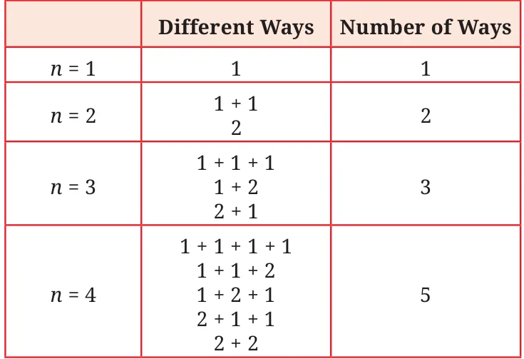
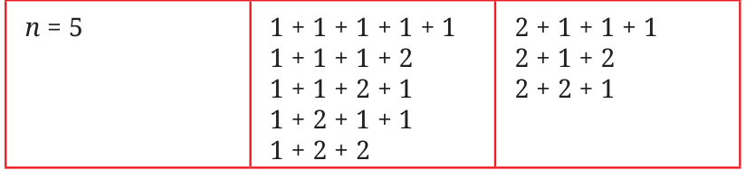
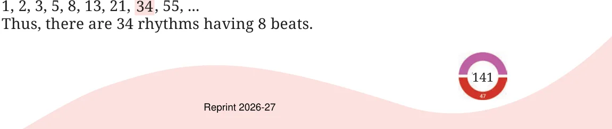
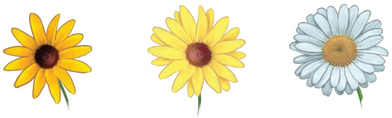
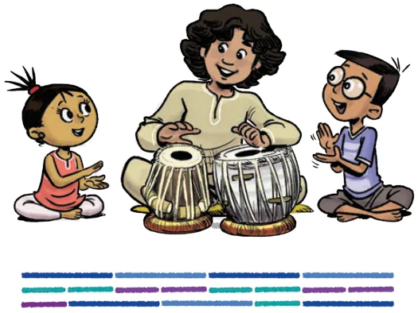

The Virahāṅka numbers first came up thousands of years ago in the works of Sanskrit and Prakrit linguists in their study of poetry! In the poetry of many Indian languages, including, Prakrit, Sanskrit, Marathi, Malayalam, Tamil, and Telugu, each syllable is classified as either long or short. A long syllable is pronounced for a longer duration than a short syllable - in fact, for exactly twice as long. When singing such a poem, a short syllable lasts one beat of time, and a long syllable lasts two beats of time. This leads to numerous mathematical questions, which the ancient poets in these languages considered extensively. A number of important mathematical discoveries were made in the process of asking and answering these questions about poetry. One of these particularly important questions was the following. How many rhythms are there with 8 beats consisting of short syllables
fill 8 beats with short and long syllables, where a short syllable takes one beat of time and a long syllable takes two beats of time. Here are some possibilities:
long long long long
short short short short short short short short short long long short long long long short short long . . . Can you find others? Phrased more mathematically: In how many different ways can one write a number, say 8, as a sum of 1’s and 2’s? For example, we have:
\(8 = 2 + 2 + 2 + 2\), \(8 = 1 + 1 + 1 + 1 + 1 + 1 + 1 + 1\), \(8 = 1 + 2 + 2 + 1 + 2\), \(8 = 2 + 2 + 1 + 1 + 2\),
etc. Do you see other ways? Here are all the ways of writing each of the numbers 1, 2, 3, and 4, as the sum of 1’s and 2’s.

Try writing the number 5 as a sum of 1s and 2s in all possible ways in your notebook! How many ways did you find? (You should find 8 different ways!) Can you figure out the answer without listing down all the possibilities? Can you try it for \(n = 8\)? Here is a systematic way to write down all rhythms of short and long syllables having 5 beats. Write a ‘1+’ in front of all rhythms having 4

Thus, there are 8 rhythms having 5 beats! The reason this method works is that every 5-beat rhythm must begin with either a ‘1+’ or a ‘2+’. If it begins with a ‘1+’, then the remaining numbers must give a 4-beat rhythm, and we can write all those down. If it begins with a 2+, then the remaining number must give a 3-beat rhythm, and we can write all those down. Therefore, the number of 5-beat rhythms is the number of 4-beat rhythms, plus the number of 3-beat rhythms. How many 6-beat rhythms are there? By the same reasoning, it will be the number of 5-beat rhythms plus the number of 4-beat rhythms, i.e., \(8 + 5 = 13\). Thus, there are 13 rhythms having 6 beats. Use the systematic method to write down all 6-beat rhythms, i.e., write 6 as the sum of 1’s and 2’s in all possible ways. Did you get 13 ways? This beautiful method for counting all the rhythms of short syllables and long syllables having any given number of beats was first given by the great Prakrit scholar Virahāṅka around the year 700 CE. He gave his method in the form of a Prakrit poem! For this reason, the sequence 1, 2, 3, 5, 8, 13, 21, 34, . . . is known as the Virahāṅka sequence, and the numbers in the sequence are known as the Virahāṅka numbers. Virahāṅka was the first known person in history to explicitly consider these important numbers and write down the rule for their formation. Other scholars in India also considered these numbers in the same poetic context. Virahāṅka was inspired by earlier work of the legendary Sanskrit scholar Piṅgala, who lived around 300 BCE. After Virahāṅka, these numbers were also written about by Gopala (c. 1135 CE) and then by Hemachandra (c. 1150 CE). In the West, these numbers have been known as the Fibonacci numbers, after the Italian mathematician who wrote about them in the year \(1202 CE -\) about 500 years after Virahāṅka. As we can see, Fibonacci was not first, nor the second, not even the third person to write about these numbers! Sometimes the term “Virahāṅka - Fibonacci numbers” is used so that everyone understands what is being referred to. So, how many rhythms of short and long syllables are there having 8 beats? We simply take the 8th element of the Virahāṅka sequence:

Write the next number in the sequence, after 55. We have seen that the next number in the sequence is given by adding the two previous numbers. Check that this holds true for the numbers given above. The next number is \(34 + 55 = 89\). Write the next 3 numbers in the sequence: 1, 2, 3, 5, 8, 13, 21, 34 , 55, 89, ____, ____, ____, … If you have to write one more number in the sequence above, can you tell whether it will be an odd number or an even number (without adding the two previous numbers)?
What is the parity of each number in the sequence? Do you notice any pattern in the sequence of parities? Today, the Virahāṅka - Fibonacci numbers form the basis of many mathematical and artistic theories, from poetry to drumming, to visual arts and architecture, to science. Perhaps the most stunning occurrences of these numbers are in nature. For example, the number of petals on a daisy is generally a Virahāṅka number. How many petals do you see on each of these flowers?

A daisy with 13 A daisy with 21 A daisy with 34 petals petals petals
There are many other remarkable mathematical properties of the Virahāṅka - Fibonacci numbers that we will see later, in mathematics as well as in other subjects. These numbers truly exemplify the close connections between Art, Science, and Mathematics.
